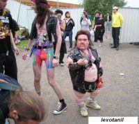

Person
 De: La Frikipedia, la enciclopedia extremadamente seria.
De: La Frikipedia, la enciclopedia extremadamente seria.
| De la serie tribus urbanas del mundo:
|
| Person
|
Ejemplo de la tribu

|
| Un típico Person Obrero con aspiraciones
|
|
| Hábitat
|
Las tiendas GAME y vertederos
|
| Inteligencia
|
Ellos se creen que son la especie perfecta
|
| Frase favorita
|
Cualquiera sin sentido
|
| ¿Peligroso?
|
Para tu ano y para tu mente
|
| Obsesión
|
Videojuegos y frikadas
|
| Notas
|
No te arrimes a ellos
|
En inglés "person" ó "Stupid Boy", traducido al español con la frase: "Vaya un personaje".
Definición de Person segun la RAE (Raro Acontecimiento Español):Del latín Personajillo Rarus. Personaje de las características de insoportable, indesable, inadmisible(in..., in..., in...) que tenemos a nuestro alrededor y que además de que lo odiamos,él aporta más leña para que más gente lo odie. Suelen frecuentar con: Emos y demás especies humanas de segunda clase.
Acepta los siguientes sinónimos:"personaje","friki","raro"...
Costumbres
- Colocación de frases en el nick tipo:"En mi ordenador caben 8.453.349 millones de galletas." o cualquier frase sin gracia de Padre de Familia, los Simpsons o serie similares. Ej: Cacafuty
- En cualquier lugar de la red colocan fotos de los personajes que más pasan inadvertidos por la sociedad,como los duendes de la ONCE,para que cuando le veas la foto pienses:"Lo inutiles que son para la socidad",cuando pienses esto ellos serán felices.
- Escuchan grupos en el reproductor de "Willow" que incitan al infierno(para que el resto de usuarios del mésenller veamos que son heavys);pero en el realidad tienen puesta en la minicadena de su hermana a la "CHA-KIRA".
- Todos los person salen en las fotos con caras de tipos duros para ocultar su infancia rota por Barrio Sésamo y Chavo del ocho. También pueden salir haciendo muecas, creyendose que alguien se reirá pero en realidad solo dan pena y ganas de pegarles un tiro. (De sus muecas solo pueden reirse los demás persons, las personas normales somos demiasiado inferiores como para entender ese humor).
- Suelen decir frases contradictorias,para demostrar al mundo de que son personas como los demás y no dioses como ellos mismos piensan.
- Suelen frecuentar los fotologs, metroflogs y demás lugares de almacenamientos de fotos con comentarios para dejar expuesto lo "especiales" que son. Ej: Saludos desde el planeta mas lejano de la galaxia, tu foto me parece... (mejor no seguir)
- Los person de lo más común sacan una ilusión,ellos inventaron el lema:Una frikada, una ilusión.
Jerarquía
Los persons son muy complejos, tienen una jerarquía dentro de la manada. En primer lugar esta el Person Padre ó Person Supremo, este es para ellos el Person creador de todo lo inútil y absurdo de este mundo, él es el único capaz de transformar un comentario cientifico en una absurda patraña llena de frikadas. Seguidamente de este vendría el Person de Alto Mando ó Person Macho, este person tiene la única función de luchar,a frikadas,contra otros person de su mismo rango para aparearse con el Person Padre y asi concebir el Anti-Cristo. Un Escalón más abajo vendría en Person Común o Person Obrero, este person es muy importante ya que tiene la función de atraer a la buena gente hacia el lado person,este tipo de person suelen frecuentar institutos en busca de estudiantes en pleno proceso de formación y asi crear persons más perfectos. El penúltimo nivel es el de Person Novato ó Pre-Person, este es la buena persona que se a arrimado al lado oscuro y quiere continuar caminado en él. Y por último estan los Person Fallidos ó Person Salvados, este tipo es lo más bajo para ellos incluso más bajo que las personas normales, estos person son antiguos person que se han rebelado contra ellos y luchan por su exterminación, o gente que ha podido resistir la influencia de un person común.
Otros Datos
- Nunca podrás tener un amigo person,pero si tenerlo como mascota ya que solo consume 4 horas de "Hora Chanante" y duerme solo por el día.
- Siempre visten de color negro para pasar inadvertidos con los cobradores del frack.
- Hay tanto person macho como person hembra;pero para concebir el Anti-Cristo debe ser entre dos person machos(estan trabajando en ello).
- Si quieres ser uno de ellos solo tiene que seguir unos secillos pasos: 1.Tinta tu ropa negra. 2. Aceptar los mandamiento del person Padre 3.Corta las relaciones con todos tus amigos y familiares y haz que te odien.
- Hay grupos radicales que ayudan a su exterminación,grupos conocidos como: "Venga pija este person ya no respira" ó "Person-suicida". Pero hay grupos de expansión de los person como: "Personrreción ó "I love P&P" (P&P= Person and Person Asotiation).
- Los Person Normales tienen derecho a una novia person siempre que esta le arraque y se coma la cabeza una vez que se apareen, sino lo hace la novia person sera lapidada tirandole a la cabeza los cromos de Full Metal Alchemist.
- Si un person te intenta hablar sera para decirte la mayor estupidez que oiras nunca, mucha gente se a suicidado despues de oir esto ya que según ellos su vida perdió el sentido.
- Si un person se junta con un emo ante tu presencia puede que pierdas tu virginadad anal(si es que aún la conservas para cuando te des cuenta).
- Hay dos cosas que irritan a un Person Normal: una son las personas inteligentes y la otra es un person (nunca dos Person Normales del mismo sexo pueden estar en el mismo espacio y en caso de que no haya más remedio ambos person deberán mear las esquinas de la zona).
- Si un person se encuentra con otro person de rango superior, el person de rango inferior debe arodillar se y pronunciar: "Asereje ja deje dejebe tu dejebe", en caso de que no lo haga el person de rango superior sacará a su Wizard de Nivel 100 y lucharan a un combate a muerte en el World of Warcraft, en caso de que el person con menor rango gane, este subira de rango y conseguira la armadura dorada de Chuck Norris (solo equipable para el paladin negro).
- Los temas de los que los person hablan son: Videojuegos,consolas,ordenadores... cualquier person que hable de algún deporte será considerado blasfemia y por lo tanto sera demandado ante el Alto Mando, expuesto a que le quiten los puntos de la tienda GAME (Articulo 123 de la Ley Person).
- El único lugar de reunión de los person es la tienda GAME, los viernes, a las 21:00 horas,cualquiera reunión fuera de tiempo o lugar sera procedida por el artículo 123 de la Ley del Person.
- El personaje que más lucho por los derechos de los person fue: Person Mandela.
- En caso de que el Person Padre falleciera, todos los person del mundo se reunirian el GAME central en Madrid y el nuevo person Padre se decidiria en un campeonato del Super Mario Galaxy en la Wii.
- El person que ganara el campeonato de la Wii, aparte de convertirse en Person Padre recibira el colgante de la película de Final Panty Advent Children y una colección de chapas de Fanta que daba con el periodico "LA VERDAD".
- Todo person quiere morir como lo hizó "Terminator 2" y que lo entierren en el planeta de Chewaka junto a Bill Gates y el dueño de la tienda GAME que solía frecuentar.
- Algunos persons tratan de llamar la atención de las personas normales diciendo tonterias como: "Prende antes una panadería que el diesel, porque como el diesel es volátil, NO PRENDE!". Otro comportamiento especial es querer llamar la atención con un objeto. Ej: Hacer como que se le cae el movil y decir: "uy, casi, ¿has visto el movil que me he comprado?"; en caso de que el movil se le caiga tienden a improvisar con una tonteria aun mayor. Ej: "ayyyy, que daño, es como si el movil fuera yo"
- Despues del anterior punto, la gente suele reirse del person, pero el person cree que el problema son los demás, ya que el es el mas guay.
Mandamientos de los Person
- 1º Amaras a la Wii sobre todas las videoconsolas.
- 2º No tomaras el nombre del Ragnarok en vano.
- 3º Sacrificarás las fiestas.
- 4º Honrarás al person Padre y a su marido.
- 5º No matarás (ningún pokemon,solo capturarlo).
- 6º No cometeras trucos en el Warcraft.
- 7º No robarás en el GAME.(esto se castiga con el Articulo 123)
- 8º No dirás mentiras ni falsos niveles del Super Mario.
- 9º No consentiras deseos ni pensamientos normales.
- 10º Codiciarás todo lo que te arrimen.
Origen de los Mandamientos
Cuentan los person que una vez un tal person llamado Josué,cabreado con la sociedad y harto de que se metieran con él por las greñas, se metió en el bosque y cayó por un agujero negro,este apareció en Ratrix.Se tiró alli 18 años hasta que consigió desvelar el codigo de Ratrix y escapar por la puerta espacio-tiempo que conllevó a la desastibilización del universo por unos instantes.Tras salir de alli, Josué escribió sus memorias y apartir del indice los person posteriores sacaron los mandamientos.
Hay diferentes versiones de la historia,como por ejemplo la de que vinieron por el impacto de un meteorito desde el planeta de Chewaka ó de que simplemente los mandamientos salieron al completar el último nivel del tetris.
Casos de emergencia
Si se ha llegado a contactar directamente con un person siga los pasos:
- 1º Asegurese que ha acabado el contacto con el person, de no ser asi huya por donde sea posible aunque su integridad física dependa de ello.
- 2º Despojese de su ropa y a continuación prendala en queroseno, pues las bacterias de los person pueden afectar a su cerebro.
- 3º Prepare una bañera con lejia y agua fuerte, he introduzcase, limpiese bien con una lija del 7.
- 4º Y por último tendra que oir 10 minutos música bacalera cada 8 horas durante 2 semanas, esto ayudara a la desinfección cerebral, puesto que la música bacalera es lo contrario de los person.
- Si observa que aún sigue teniendo jaquecas, repentinos cambios de humor, depresiones y ganas de suicidarse........vaya pensando en lo último, antes de convertirse.
Autor(es):
- Aque
- Epikurolibre
- Azulejos
- El Sevillano
- Nadaquever
- Planeta paquetillo
- Antiperson
- Veni Vidi Vici
- E1324
Frikipedia 2005-2016, Licencia
GFDL 1.2 - Extraído por FrikiLeaks